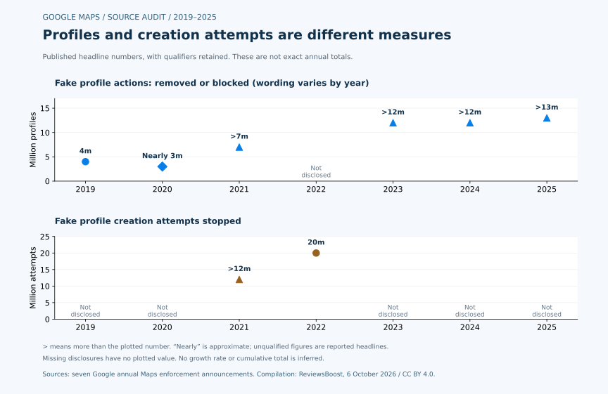

Six of seven annual Google announcements disclose a fake-business-profile action count. The 2022 announcement instead reports 20 million blocked creation attempts. Substituting that number into a profiles-removed chart changes the unit being measured.
Fake reviews and fake businesses are related problems, but they leave different statistical footprints. A review can be removed from a real listing. A fabricated business profile can be blocked or removed. An attempt to create or claim a profile can be stopped before the intended change takes effect. A single headline labelled “Google spam removed” hides those distinctions.
We read seven annual Google Maps enforcement announcements, covering activity from 2019 through 2025, and classified their business-profile figures into three event types. This article publishes the resulting 21-row dataset, including explicit missing values, original figures and a script that checks the classification and CSV. All source links were checked on October 6, 2026.
What the seven-source audit found
- 6 of 7 years disclose a headline count of fake profiles removed or blocked. The missing year is 2022.
- 2 of 7 years separately disclose blocked fake-profile creation attempts: 2021 and 2022.
- 3 of 7 years disclose unauthorized verification or claim attempts: 2020, 2021 and 2023.
- Three different event types must stay separate. The same actor can make repeated attempts, and the sources do not provide a deduplicated population of scammers or businesses.
These are original disclosure-coverage calculations from the linked source set. “Not disclosed” describes an omission in those seven selected announcements; it does not establish that Google never published the metric elsewhere.
Google fake-business-profile statistics, 2019–2025
Activity year is the year the enforcement took place. Google published each announcement the following year. Figures retain their qualifiers and action wording; “m” means million.
| Activity year | Fake profile actions | Creation attempts stopped | Unauthorized ownership attempts stopped | Primary source |
|---|---|---|---|---|
| 2019 | 4m removed | Not disclosed | Not disclosed | Google 2019 disclosure |
| 2020 | Nearly 3m blocked or removed | Not disclosed | More than 3m | Google 2020 disclosure |
| 2021 | More than 7m removed | More than 12m | Nearly 8m | Google 2021 disclosure |
| 2022 | Not disclosed not disclosed | 20m | Not disclosed | Google 2022 disclosure |
| 2023 | More than 12m removed or blocked | Not disclosed | More than 2m | Google 2023 disclosure |
| 2024 | More than 12m removed or blocked | Not disclosed | Not disclosed | Google 2024 disclosure |
| 2025 | More than 13m removed | Not disclosed | Not disclosed | Google 2025 disclosure |
The 2019 sentence reports 4 million profiles alongside a qualified review count. We retain the published profile number without inferring a separate “more than” bound. The 2020 count is “nearly” 3 million. All other disclosed profile counts explicitly use “more than.” Ownership wording changes from verification to claiming, so that column is a broad editorial classification, not a uniform operational series.



Why 19 million and 20 million can be misleading
The 2021 announcement reports more than 7 million fake profiles removed and more than 12 million stopped creation attempts. Adding the two headline numbers produces 19 million, but that sum mixes profiles with attempts. It is not a disclosed count of 19 million removed profiles, and Google does not say the groups represent distinct entities.
The 2022 announcement provides a 20-million creation-attempt figure without the same headline profile-action metric. An annual chart that uses 7 million removals in 2021, 20 million attempts in 2022 and 12 million removals or blocks in 2023 would silently change definitions twice. Marking 2022 as missing is the reproducible choice.
There is a second distinction: “removed” and “blocked or removed” describe different action coverage. A prevented profile is not necessarily a previously visible listing. We retain those labels rather than presenting the seven years as an exact, directly comparable removal trend.
What the latest 13-million figure does tell us
For 2025, Google reports more than 13 million fake Business Profiles removed. That is a profile-enforcement threshold, not a count of fake reviews and not a count of Canadian businesses. It also does not identify the number of unique offenders.
It is tempting to compare the 13-million threshold with the previous 12-million threshold and publish an 8.33% increase. That arithmetic compares headline thresholds, not actual totals: both underlying counts are undisclosed, and the earlier source includes blocking as well as removal. We therefore publish neither that growth claim nor a seven-year cumulative total.
How a business owner can use this research
First identify the affected object. Is the concern a review attached to your legitimate profile, a fabricated listing, an incorrect edit, or an unauthorized ownership claim? A platform-wide enforcement number does not identify which process applies to your situation.
For an individual review, start with our review evidence worksheet and policy-based reporting guide. For broader context, our fake-review research measures review-content enforcement separately. Keeping profiles and reviews apart makes evidence, reporting and later outcome tracking more precise.
Method, scope and limitations
- Select one Google-authored annual Maps enforcement announcement for each activity year, 2019–2025.
- Extract the headline fake-profile count, fake-profile creation-attempt count and unauthorized verification or claim-attempt count where disclosed.
- Store the numeric headline, qualifier, event unit, source action wording, publication date and URL separately. Leave absent numbers null in JSON and blank in CSV.
- Compute coverage by counting non-missing values within each metric. Never treat a missing year as zero or add unlike event units.
- Use independently reported numbers without inventing confidence intervals, unique-entity counts, Canadian shares or removal success rates.
The dataset is a compilation of Google's self-reported enforcement disclosures, not an independent measurement of platform fraud. The sources do not supply a consistent denominator of profile submissions or existing profiles, so a prevalence rate cannot be calculated. Changes in enforcement, reporting and action definitions may affect the headlines.
Public reports of directly flagged profile removals are narrower figures with unspecified overlap with headline totals. They are deliberately excluded from our additive calculations. We also exclude profile edits, protected businesses, accounts and review counts because their units differ.
Download and reproduce the dataset
- 21-row source extraction, CSV
- Structured data, definitions and scope, JSON
- CSV column metadata
- Classification and CSV audit script — run
node audit-google-fake-business-profiles.mjsbeside the downloaded CSV and JSON. - Figure reproduction script — requires Python and Matplotlib; run beside the JSON.
- BibTeX citation · Citation File Format
What is original, and how to cite it
Google produced the underlying enforcement numbers. ReviewsBoost contributed the event-type classification, explicit missing-value series, disclosure-coverage calculations and figures. Earlier online compilations of Google profile enforcement exist. Our October 6, 2026 search is not proof of priority, and we do not claim to be the first publication of these numbers.
ReviewsBoost Editorial Team. (2026, October 6). Google fake business profiles: a seven-year data audit (Version 1.0). ReviewsBoost. Link to this article and retain the relevant Google source when reusing an individual count.
Our original compilation, calculations and figures are available under CC BY 4.0. That licence does not grant additional rights to Google's source material. Attribution should identify ReviewsBoost, link the research and licence, and note any changes. For corrections, use our editorial correction process.
Primary sources and extraction dates
- Google Maps 2019 enforcement announcement — published 2020-02-19, accessed October 6, 2026.
- Google Maps 2020 enforcement announcement — published 2021-02-18, accessed October 6, 2026.
- Google Maps 2021 enforcement announcement — published 2022-03-24, accessed October 6, 2026.
- Google Maps 2022 enforcement announcement — published 2023-03-31, accessed October 6, 2026.
- Google Maps 2023 enforcement announcement — published 2024-02-13, accessed October 6, 2026.
- Google Maps 2024 enforcement announcement — published 2025-04-07, accessed October 6, 2026.
- Google Maps 2025 enforcement announcement — published 2026-04-16, accessed October 6, 2026.